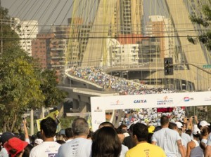
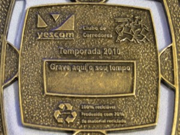
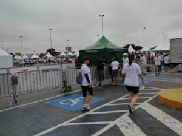
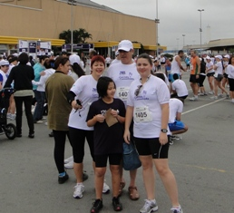
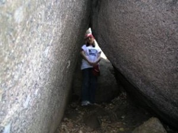
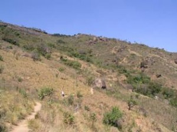

vamo, vamo, vamo…
Ana Shibata
Sou advogada, mãe, esposa, amiga, companheira. Há algum tempo pretendia sair do sedentarismo e assim foi com aulas de yoga, depois academia para baixar o colesterol e numa inscrição para uma corrida feminina feita mais pelo kit (sem nunca ter corrido ou treinado) o bichinho do quero mais me pegou e, agora trilho por este caminho tendo como mantra "Mens sana in corpore sano".
Home page: http://urbi-orbi-trek.blogspot.com/
Posts by Ana Shibata
Corrida pela Paz Caixa
127 years
by Ana Shibata
in Ex-sedentário

Foto tirada no local do evento – próximo a entrega do chip
Setembro está sendo um mês bem atípico para os corredores de rua, vem sendo realizado todo final de semana várias corridas para todos os gostos e pernas.
Para aqueles que ainda não me conhecem pelos post anteriores, sou iniciante nessa modalidade Corredor de Rua, ainda um pouco sedentária, mas……….. as corridas de rua para mim tem sido verdadeiros treinos. Sei que isso não é o ideal, mas estou psicologicamente preparando-me para assíduos treinos para melhor qualidade de vida e também melhorar minha performance nas provas.
A minha primeira inscrição fiz no ímpeto, sem noção do quanto representava 5 km, tendo na semana que antecedia a prova a conscientização desse ato, o temor de ultrapassar o tempo estimado que tinha lançado no site quando da inscrição, cheguei a sentir um frio na barriga quando estávamos chegando no local da prova.
Hoje, esse temor já passou, vou para as provas querendo baixar meu tempo, mas com a consciência que deveria ter treinado para tal, assim como meus colegas do blog o fazem. Sem querer dar ou arranjar desculpas, para os homens é tudo mais fácil, o desprendimento é maior. Veja, durante a semana sou profissional, nos finais de semana quero ser mais “Amelia”. É no final de semana que vou ao sacolão comprar frutas e legumes para a semana; que piloto o fogão, que curto mais a família, tomamos o café da manhã juntos, então meu sábado foi para as “cuias”……… final de semana de treino, somente no domingo, com ressalvas.
Como escrevi acima, setembro está sendo fenomenal, corrida todos os findis e, não foi diferente no dia 12/09, lá estava eu na Avenida Jornalista Roberto Marinho as 7hs30min, me aquecendo para a corrida. O dia estava lindo, havia muitas pessoas com a camiseta do evento, um azul claro médio bonito e muitas outras com suas camisetas coloridas, alguns em grupos (amigos, familiares) e outras solitárias assim como eu, unidos com uma única finalidade correr.
Dada a largada, andei até o portal para começar a correr quando pisasse no tapete vermelho que acusava 2min e alguns segundos de tempo decorrido. Logo no início uma bela subida de 1,5km, o sol já estava bem alegre e resplandecente.
Novamente um percurso diferente subida de início, fôlego não me faltou, faltou pernas, isso sem falar no cheiro insuportável do alto da ponte, em virtude da poluição do Rio Pinheiros e enquanto eu galgava meus metros de corrida subindo ponte acima com um sol forte no rosto e o cheiro ruim, bateu um pensamento feioooooooo, desistir da prova…………….. mas o outro lado do cérebro me dizia que valia a pena continuar, afinal eu paguei a inscrição, fiz o marido e a filhota acordar super cedo num domingo (Melinha também acordou cedo, mas para trampar) – DESISTIR FOFA, J A M A I S !!! E lá fui eu, entre trotes e caminhadas, quando vi a placa de 2 km, pensei, só faltam 3km para a prova………. já na marginal, mais uma subidinha avistei um portal, onde direcionavam os corredores para o percurso mais longo e o meu percurso, que pela grata informação, a corrida era de 4 km, ufa!!!……
Mas esse 1 km final, se desdobraram em 2, continuei forte, olhei algumas vezes o cronometro, mas sem crise, fui eu para os metros finais, a única imagem que voce enxerga pela frente são os números do portal……….. tentei num relance encontrar o marido e a filhota, não os encontrei, fixei meus olhares para aqueles números vermelhos tão expressivos………. bom, cruzava eu aos 34 min e segundos……. confesso que feliz por ter acabado a prova, o tempo……… o tempo dirá por si só, mas no meu cronometro que só o parei alguns segundos depois de cruzado o portal acusava 33min.
O resultado conforme informação do site para meu stress total só seria divulgado na segunda a noite, mas na tarde de segunda já tinha a divulgação, meu tempo bruto foi de 34min39seg e o líquido foi de 32min23seg.
Se comparado o tempo desta corrida com o de Salvador já fiz um progresso, mas o percurso de Salvador era muito melhor totalmente plano, as condições climáticas bem agradáveis, pena não ter aproveitado esse terreno para ter feito um tempo menor.
Enfim, mais um percurso para acrescentar em minha jornada de corredora de rua.
No próximo final de semana estarei participando com alguns parceiros do blog e amigos da 18ª Maratona Pão de Açúcar de Revezamento S.Paulo, minha estréia nesta modalidade, que já está me fazendo perder o sono …
É isso ai, gentemmmmmmmmmmmm, próxima semana imagino que o blog estará recheado de impressões pessoais de nossa turma sobre mais uma corrida do mes de setembro.
Abraços.




Track Field: Corrida e Caminhada Contra o Câncer
57 years
by Ana Shibata
in Ex-sedentário
Hoje aconteceu a Corrida e Caminhada Contra o Câncer promovida pela Track Field no Center Norte as 8hs da manhã.
O sedentarismo continua em alta comigo……….. mas estou no firme propósito desta semana que se iniciará em pegar firme nos treinos e exercícios de resistência. Acho que meu melhor desempenho dependerá disso.
Ontem fez muito calor aqui em Sampa, coisa de 32ºC, com vários dias de baixa umidade.
Tentei dormir cedo, mas as tarefas familiares não me deixaram dormir senão quando quase virava uma abobora………rs………… mas foi uma noite de cão…….. literalmente, a princípio ainda fazia muito calor. Acordei várias vezes a noite, ops, madrugada, sei que as 2hs05 min senti o frio que vinha pela veneziana da janela, confirmando a previsão do tempo de que sábado seria frio com queda da temperatura. Mas esta não foi a única vez que acordei, seguiram-se de hora em hora e, numa destas percebi que a ansiedade bateu…… afinal é o meu maior percurso em corridas inscritas sem treinos, fiquei rolando na cama, até pegar no sono novamente para acordar as 6 hs……..
O tempo estava frio e ouvi no rádio que fazia 21ºC, no Center Norte o termômetro acusava 18ºC, chuviscou em vários pontos da corrida. O aquecimento do meu corpo fez com que eu abaixasse as manguitas até os punhos (levantadas rapidamente ao final da corrida).

Indo pegar o chip
Mas desta vez não corri sozinha, consegui fazer com que o maridão caminhasse (eu o inscrevi para caminhada) com a Syssi, achei bárbaro ele não ter recusado ………. ah, a Melinha também participou, mas corremos cada qual no seu ritmo (bom, ela estava acompanhada do Ygor).

No início ela estava a minha frente, logo depois eu a passei e continuei assim, quando já estava na 2ª volta do circuito vi a Sy e o maridão caminhando. Algum tempo depois Melinha encostou e disse que eu dei trabalho para ser alcançada (rs), mas sabia que o tempo estipulado em minha meta mental de correr em 50 min. seria ultrapassado, segui enfrente e os deixei para atrás.
O circuito para mim foi inusitado, diferente das outras provas 2 voltas pelo circuito com subida e descida, gostei.
A melhor imagem da corrida é avistar o portal da chegada……….. e lá estava eu para completar mais esta corrida.
Confirmou o que eu senti nos kms finais, ultrapassei minha meta e cheguei aos 53min45seg líquidos.
Fiquei decepcionada comigo, mas sei que dei causa, não estou treinando e preciso fazê-lo urgentemente, porque a Maratona de Revezamento Pão de Açúcar está chegando.

Próxima semana que me aguarde…

Nosso reencontro no final da corrida

Nós também merecemos o podiummmmmmmmmmmmmmm…………..iuhuuuuuuuuuuuuuuuuuuuuu
Pequenos gestos
47 years
by Ana Shibata
in Ex-sedentário

Deixo uma pequena reflexão……….
É curioso observar como a vida nos oferece resposta aos mais variados questionamentos do cotidiano… Vejamos:
A mais longa caminhada só é possível passo a passo…
O mais belo livro do mundo foi escrito letra por letra…
Os milênios se sucedem, segundo a segundo…
As mais violentas cachoeiras se formam de pequenas fontes…
A imponência do pinheiro e a beleza do ipê começaram ambas na simplicidade das sementes…
Não fosse a gota e não haveria chuvas…
O mais singelo ninho se fez de pequenos gravetos e a mais bela construção não se teria efetuado senão a partir do primeiro tijolo…
As imensas dunas se compõem de minúsculos grãos de areia…
Como já refere o adágio popular, nos menores frascos se guardam as melhores fragrâncias…
É quase incrível imaginar que apenas sete notas musicais tenham dado vida à Ave Maria, de Bach, e à Aleluia, de Hendel…
O brilhantismo de Einstein e a ternura de Tereza de Calcutá tiveram que estagiar no período fetal e nem mesmo Jesus, expressão maior de Amor, dispensou a fragilidade do berço…
… Assim também o mundo de paz, de harmonia e de amor com que tanto sonhamos só será construído a partir de pequenos gestos de compreensão, solidariedade, respeito, ternura, fraternidade, benevolência, indulgência e perdão, dia a dia…
Ninguém pode mudar o mundo, mas podemos mudar uma pequena parcela dele:
esta parcela que chamamos de Eu.
Não é fácil nem rápido…
Mas vale a pena tentar!
Sorria!!!
(Autor: Fábio Azamor)
Corrida e Caminhada contra o Cancer – Etapa S.Paulo (15/ago/2010)
67 years
by Ana Shibata
in Ex-sedentário
Por ser solidária na quarta (11/08) acordei com a garganta raspando e a noite a gripe manifestou com muita coriza e espirros (peguei do maridão) e como temperatura se manteve baixa durante a semana, a gripe persistiu.
Como a previsão do tempo para o final de semana (14 e 15/08) seria de queda de temperatura em Sampa, sábado o dia foi frio e acordei com um pouco de tosse, o que me deixou preocupada, domingo precisaria estar um pouco melhor para a corrida.
Domingo, acordamos as 6 hs, e ouvi que a temperatura estava em 8º C (mas a sensação térmica devia estar em torno de 6º) e a máxima chegaria aos 14º. Já estava um pouco melhor, a tosse tinha melhorado, mas os sintomas da gripe ainda permaneciam. Ao sair de casa as 7 hs não senti tanto frio, estava com uma jaqueta grossa . O transito estava super tranqüilo, chegamos na Assembléia Legislativa as 7hs15min, com tempo mais que suficiente para alongamentos.
O frio……….. fez com que eu só tirasse minha jaqueta minutos antes da corrida para poder aclimatar meu corpo…….. foi quando coloquei aqueles adesivos de dilatação no nariz para poder respirar melhor.
Sylvia quis correr comigo, mas ficou receosa de não poder participar e por outro lado ela estava capotada de roupas, achei por bem deixá-la com o pai aguardando minha chegada. Estou despertando nela o gostinho pela corrida (já estou de olho em 2 corridas kids para inscrevê-la), mas acho que correr ao meu lado deve ter um sabor especial, tanto que ela me disse que se não conseguisse seguir minhas passadas que não ficasse preocupada que ela iria caminhando. Muito bom essa cumplicidade, é massagear o ego de mãe em saber que estamos influenciando nossas crias, naquilo que é bom, saudável, fazer o bem para receber o bem.
Deixei o marido e a Sy e me dirigindo para o início da prova. Dada a largada o frio ficou para trás, passei por um desses relógios de rua que indicava 8ºC. Durante a corrida tive um pouco de coriza mas deu para levar. O tempo continuava frio, sem perspectiva de melhora.
Desta vez os 5 km pareceram uma corrida longa, tanto que quando vi a placa de 1km achei que tivesse percorrido mais metros……..ainda estou alternando entre corrida e caminhadas fortes, mas ao avistar a placa de 4 km corri com mais força e quando avistei o portal da chegada fiquei a procura da família (eles estavam logo depois do tapete vermelho da chegada). Cruzei a chegada e o cronometro do portal acusava 46min11seg.
Depois de entregar o chip e pegar minha medalha de participação fui ao encontro de minha família……….. , Sy além do seu casaco vestia minha jaqueta, o marido estava com os olhos lacrimejando (ainda estava gripado), como eles ficaram parados durante a minha corrida pude perceber o quanto estava frio. Logo comecei a espirrar e a tossir, meu nariz ardia muito, não via a hora de chegar em casa e ficar debaixo das cobertas. Era realmente um domingo típico para ficar nas cobertas.
A noitinha fiquei procurando o resultado da corrida e, fiquei muito frustrada quando os sites diziam que o resultado somente seria divulgado em 72 hs……….. somente hoje no final da tarde saiu meu resultado: tempo líquido de 00:44:11.
Para quem ainda não saiu do sedentarismo (estou fazendo das provas meus treinos) ainda chego lá….

Antes da corrida

Chegada!!!

Olha a medalha aqui!!! (ihhhhhhhhh, mostrei o verso)
Missão cumprida, voltando para casa.
O que estou fazendo …
37 years
by Ana Shibata
in Ex-sedentário
Sei que estou em falta com as fotos da trilha da Pedra Grande, mas estive colocando-as num link para direcioná-las para o post nao ficar extenso…….. acabou dando pau….deve haver outros meios de linkar mais fácil, por enquanto minha ignorância persiste no assunto …. mas não esqueci da fotos não!!!
Semana passada (domingo) mesmo com dor de garganta corri na esteira que está instalada na sala de casa (doação de uma vizinha do condomínio, depois de trocar a correia está funcionando…….. não é aquelas coisas, é modesta, mas dá para correr/caminhar).
Começei com 10 min, pq precisei trocar a caixa de som do meu psp para ouvir minhas músicas inspiradoras mais alto….. e depois foram mais 30 min numa caminhada mais forte com 1 ou 2 corridinhas de 3 min.
Depois na segunda e terça a garganta pegou forte, tive de ir na terça a tardinha no PS (eu achei que fosse mais refluxo do que gripe) mas estava enganada, estava com a garganta inflamada e com ulcerações, fui medicada, soro, corticoide e um analgésico para dor……… depois de uns 40 min, começei a sentir a garganta melhorzinha (não conseguia nem engolir saliva que ardia bastante). Além da medicação na veia, precisei tomar uma droga cavalar, pq o dito remédio é controlado.
Bom a garganta está menos dolorida, mas sinto ainda pegar quando engulo líquido rápido.
Tudo isso aconteceu um pouco antes da nossa viagem a Salvador. É o maridão tinha compromissos aqui e aproveitamos para vir junto (eu e Sy), Melinha trabalha e ficou…….. então parte de mim está aqui e outra ficou em Sampa.
O tempo aqui está ótimo, temperatura em 27º, hj choveu pela manhã, uma garoa rápida e logo o sol abriu, nem deu para molhar……….. no final da tarde tornou a chover, logo passou, e as 19 hs estávamos subindo a rampa o para o Farol da Barra tivemos de voltar e nos abrigarmos no ponto de ônibus, muito vento e uma chuva forte……. ficamos uns 3 min, então o maridão sugeriu voltarmos correndo……….. nosso hotel fica próximo……….. enfim, tomamos um banho de chuva super delicioso e o tempo continua quente, ou melhor, apenas fresco.
Aqui faremos bons exercícios para as pernas………rs…….. tem muito o que andar e, eu já ando aprontando as minhas, me aguardem…


Praia de Pituba Pituba, o tempo mudando


Praia da Barra -Salvador Forte Sao Diogo

Farol da Barra ao fundo

Caminhada até Pedra Grande – Atibaia
77 years
by Ana Shibata
in Ex-sedentário
Não tenho treinado como meus colegas de post, ainda levo uma vida meio sedentária ou está faltando um pouco mais de disciplina, pois o clima de férias escolares e o friozinho estão me deixando preguiçosa.
Entretanto, esporadicamente tenho feito alguma coisa, alguma peripécia.
Tentei conciliar a ida do maridão ao Rio de Janeiro para correr…….. mas o queridão perdeu o rumo, atravessamos o Túnel Rebouças que nos leva ao outro lado da cidade, literalmente e quando conseguimos voltar a Lagoa já tinha perdido o horário de apresentação. Imaginem meu bico!!! Fiquei hiper-super-mega mal humorada………. tinha me preparado tanto psicologicamente para os 7,5km…….. bom nem preciso comentar a frustração…….
Mas nada como um feriadão para abafar a frustração. Fomos comemorar o niver da Melinha em Atibaia e eu como uma mãe esportista fiz um convite meio que intimidador, mas ao mesmo tempo desafiador………. Vamos fazer a trilha da Pedra Grande eu, você e o Igor?! Já tinha esquematizado mentalmente tudo, o maridão ficaria com a Sy, pois está se recuperando da última crise de gota.
Melinha já fez essa caminhada (trilha) 2 outras vezes, mas há anos atrás, a primeira foi com o maridão e como a Sy era pequenina fiquei em casa, nesta caminhada somente de ida levaram 6 hs, descontando o fato de ser caminho novo para eles e paradas para fotos, o dia estava muito quente e eles saíram de casa no meio da manhã……. Alega o maridão que o pedido de resgate foi por conta de que Melinha estava cansada……. na verdade acho que ele não agüentou, porque no penúltimo lance de subida na pedra ele apenas demorou uns 20 minutos e Melinha foi 2 vezes ao encontro dele…….. e nós já estávamos aguardando-os de carro. Neste episódio depois de chegarmos em casa, eles terem tomado aquele banho e feito a merecida refeição o maridão teve crises forte de caimbras nas pernas no início do repouso. (…. selecionando fotos)


VISTA-TRILHA-PEDRA-GRANDE- 012 – melinha na mangueira
17GO2003-010


TRILHA-PEDRA-GRANDE-019 TRILHA-PEDRA-GRANDE-021


TRILHA-PEDRA-GRANDE-022 TRILHA-PEDRA-GRANDE-023
 
TRILHA-PEDRA-GRANDE-078 TRILHA-PEDRA-GRANDE-086


TRILHA-PEDRA-GRANDE-055 TRILHA-PEDRA-GRANDE-056


TRILHA-PEDRA-GRANDE-127 TRILHA-PEDRA-GRANDE-128


TRILHA-PEDRA-GRANDE-176 TRILHA-PEDRA-GRANDE-177
 
TRILHA-PEDRA-GRANDE-184 TRILHA-PEDRA-GRANDE-190


TRILHA-PEDRA-GRANDE-201 TRILHA-PEDRA-GRANDE-205


TRILHA-PEDRA-GRANDE-209 TRILHA-PEDRA-GRANDE-211
Siga o link abaixo e veja todas as fotos
http://anarun.myphotoalbum.com/view_album.php?set_albumName=album01
A segunda vez que eles fizeram a trilha a Pedra Grande foi no meu aniversário (outubro) que não me recordo o ano agora, mas desta vez foram em um grupo de +- 70 pessoas da empresa do maridão e o percurso seria ida e volta. Saíram as 7 hs e no meio da tarde já estavam em casa. Foram recebidos com churrasco. Via-se a exaustão do percurso, mas todos alegres e sem ter conhecimento do meu natalício acabaram cantando os Parabéns com direito a um pedaço de bolo…. Desta vez também não fui, como uma boa anfitriã fiquei para organizar o churrasco e aguardar o pessoal. (…. selecionando fotos)
Eis a oportunidade que me aguardava agora eu poderia estar fazendo/desbravando a Trilha da Pedra Grande. Eu pensei em subir e o maridão ir nos buscar de carro, ledo engano, quando eu disse que iríamos fazer a trilha ele nos intimidou e disse que deveríamos subir e descer!!! Sem apoio, sem mordomia de nos buscar de carro. É preciso deixar claro o grande sarcasmo do maridão, porque ele achava que eu não conseguiria, aliás, aquele apoio bem incentivador, um companheirismo ímpar……rs …. eu nem ligo.
Na sexta a noite (09/07) passamos no supermercado para comprar barrinhas de cereal e cookies de aveia para o percurso. Depois em casa enchemos as garrafas de água, jantamos e eu fui dormir não tão tarde, pois o combinado era sairmos as 7 hs.
O celular me despertou as 6 hs, acordei a turma e tratei de tomar meu banho, depois tomamos o café da manhã, arrumamos as mochilas e o maridão foi nos levar ao pé da trilha.
Aqui cabe um comentário sobre a Pedra Grande, existem várias trilhas para alcançar o pico da Pedra Grande, a que Melinha foi às outras 2 vezes é uma que fica perto do Condomínio Panorama, perto das torres de antenas.
Pesquisando na internet, pois queria informar dados mais técnicos (não encontrei nada, sniff), fiquei sabendo que existem 3 opções de trilhas: das “Mangueiras”, a dos “Monges” e a da “Minha Deusa”. Na verdade não sei qual trilhamos, mas um pouco antes de chegarmos no grande mirante e na plataforma de 22.400 metros quadrados elas se encontram e nos levam a um mundo fantástico de grandes pedras e mirantes sensacionais.

01 – Vista da Montanha Pedra Grande
A Pedra Grande com 1.450 m é o ponto mais alto de Atibaia. De lá pode avistar-se até os municípios vizinhos (Bragança Paulista, Piracaia, Jundiaí, Nazaré…). Para os mais corajosos há a possibilidade de saltar de asa-delta e parapente. Também existe o acesso de carro pela Rodovia D. Pedro I, km 65.
Começamos a trilha as 8hs20 min, acertamos nossos cronômetros, o sol estava presente e ainda tímido, com nevoeiro que poderão ser percebidos pelas fotos.

02- saída de casa

03 – Pedra Grande ao fundo

04 – início da trilha

07 – cronometrando

08 – ajustando cronometro

09 – início da subida
A trilha é desafiadora, enquanto subida não assusta, mas a descida seria brava, porque numa parte do trecho a terra é amarela com miúdas pedrinhas soltas e bastante íngremes. A paisagem é linda e você fica observando a cidade cada vez menor. Existem muitas pedras no meio do caminho cuja parada é obrigatória para contemplação e fotos.


14 – obstáculos do percurso
Durante a trilha encontramos 2 corredores e, em virtude de um deles estar usando uma regata da corrida de montanha de 2000 eu o indaguei se iria participar da corrida do final do mês, sendo sua resposta afirmativa. Eu não tinha reparado no tênis, mas segundo o Igor (meu norinho) o tênis parecia ser o de corrida. Estranhei porque eu também estava usando um e escorreguei muito, não achei o tênis apropriado para corrida naquelas circunstâncias.
Chegamos ao topo com quase 4 hs, descansamos e contemplamos a paisagem por uns 15/20 min para nosso retorno. O Igor ficou bastante frustrado quando não viu o carrinho que vende pastel e caldo de cana (segundo o maridão existe o tal carrinho e eu disse que seria nosso prêmio), mas comemos as bananas e um pouco de cookies de aveia.
A descida como eu previ foi com calma e vários escorregões (terra solta e descidas íngrimes), meu medo foi o de ficar muito machucada e precisar de resgate, porque durante a descida não encontramos muitos caminhantes e o celular as vezes fica sem sinal e como dizer onde estar, não existem marcos. Agora o sol já estava mais forte e durante quase todo o percurso não há sombra.
Por toda a trilha existem sulcos (alguns com pequenas elevações que sinalizam ser pequenos degraus, mas profundos) que nos auxiliam tanto na subida quanto na descida. No retorno foi providencial esses sulcos e, como não cabem as 2 pernas paralelas eu as usei para uma servir de apoio de forma a não escorregar pirambeira abaixo (imaginando a cena, seria com quase andar de cócoras). Com isso acabei forçando o joelho e senti um pouco a parte anterior que veio fisgando 3/2 da descida. Numa das paradas Melinha fez uma massagem que providencialmente parou de doer (acho que foi por conta de não ter feito alongamento para a descida).

40 – visão dos sulcos na trilha
Depois de termos passado pela mangueira quase no final do caminho encontramos o maridão e a Sy que vieram nos buscar no final da trilha.
Acho que eu conseguiria chegar até em casa a pé (talvez mais uns 20/30 min de caminhada em terreno plano), mas a maioria ganhou e voltamos de carro.
O percurso total foi de 7hs9min e, somente a descida 2hs49min.

72 – tempo final da caminhada ida e volta

73 – tempo de descida
As dores do pós caminhada ocorreram somente no domingo e acentuado na segunda para mim. Como forcei muito as coxas a dor perto do joelho foram maiores com o sentar e levantar-se do dia a dia.
Para minha surpresa Melinha me disse na terça (13/07) que podíamos repetir a façanha todo mês já que eu quero participar de uma corrida de montanha. Eu fiquei surpresa, mas não com medo.
Tai, um desafio tentador….
(ainda estou postando as fotos!!! CONFIRAM)
Minha homenagem ao Dia do Homem – 15/VII/2010
27 years
by Ana Shibata
in Ex-sedentário

Levando em consideração que somos resultado
de uma costela do homem, nada mais justo do que prestarmos
uma homenagem a eles criando o Dia Internacional do Homem.
Quem se veste como pingüim no dia do matrimônio?
O humilde homem!

Quem corre o risco de ser assaltado e morto na saída da boate,
cada vez que participa dessas reuniões noturnas com os amigos,
enquanto a mulher está bem segura em casa na sua caminha?
O desprotegido homem!

Quem é o encarregado de matar as baratas da casa?
O valente homem!  Quem apanha quando chega em casa com marca de batom na camisa
Quem apanha quando chega em casa com marca de batom na camisa
e é obrigado a dar explicações que nunca são aceitas?
O incompreendido homem!
Quem é que toma banho e se veste em menos de vinte minutos?
O ágil homem!

O ágil homem!
Quem é que tem de gastar consideráveis
somas em dinheiro comprando presentes para o dia das mães,
da esposa, da secretária e outras festas inventadas
pelo homem para satisfazer à mulher?
O generoso homem!

somas em dinheiro comprando presentes para o dia das mães,
da esposa, da secretária e outras festas inventadas
pelo homem para satisfazer à mulher?
O generoso homem!
Quem jamais conta uma mentira?
O ético homem!

O ético homem!
A tortura de ter que usar terno no verão?
O sofrido homem! O suplício de fazer a barba todo dia?
O suplício de fazer a barba todo dia?
O sacrificado homem!

O sofrido homem!
O suplício de fazer a barba todo dia?O sacrificado homem!
O desespero de uma cueca apertada?
O mártir homem!
 Ter sempre que resolver os problemas do seu carro
Ter sempre que resolver os problemas do seu carroe de suas mulheres também?
O inteligente homem!
Ter a obrigação de ser um atleta sexual?
O vigoroso homem!

Ter que reparar que ela trocou a tintura do cabelo
de Imédia 13 para 731 louro bege salmon plus up light forever?
O observador homem!

de Imédia 13 para 731 louro bege salmon plus up light forever?
O observador homem!
Ter que jamais dizer que ela engordou,
mesmo que isto seja a pura verdade?
O leal homem!

mesmo que isto seja a pura verdade?
O leal homem!
Trabalhar prá caramba em prol de uma família
que reclama que você trabalha prá caramba?
O batalhador homem!
que reclama que você trabalha prá caramba?
O batalhador homem!
Quem tem que passar por TPM calado, todo mês?
O calmo homem!
O calmo homem!
 Ter que agüentar a sogra que chega
Ter que agüentar a sogra que chega
para ficar três dias em casa e acaba ficando três meses?
O submisso homem!

Sem falar, de ter que bancar algumas mulheres,
todas as suas vaidades, frescuras, plásticas e outras cositas mais.
O Santo Homem!
Quem está lendo isso às escondidas para poder dar boas risadas,
já que se for surpreendido corre o risco de ser massacrado?
O indefeso homem!
já que se for surpreendido corre o risco de ser massacrado?
O indefeso homem!
Homens: Isto é uma brincadeira para que você possa
também sorrir conosco neste dia.
Fica aqui registrado toda nossa gratidão e respeito
e o reconhecimento de que sem vocês nada seriamos.
Amamos vocês!
Depois da corrida,
57 years
by Ana Shibata
in Ex-sedentário
Não tenho feito nenhum treino…… o frio é tão convidativo e a cama sedutora pelas manhãs….
Tenho apenas caminhado esporadicamente….. isso é ruim….. quem sabe agora no mês de julho eu comece a fazer treinos para valer…. para aumentar minha resistência e tentar diminuir meus minutos.
Sinto que preciso de mais fôlego e isso só vou conseguir se começar a correr mesmo…. sair das caminhadas.
Mas enquanto isso, navegando nos sites da vida, achei uma promoção supimpa e, lá fui eu.
Não posso dizer que tive um ataque de consumismo (aliás, nós mulheres não temos ataques de consumismo, apenas precisamos de + 1 sapato da cor Y para combinar com a bluxa X, ahhhhhhhhhhhhh……… também precisamos da bolsa………..oras!!! Ou aquele blusinha diferente………. MAS SEI que isso a galera masculina não entende ou se faz de desentendido, precisamos estar belas para *) aumentar nossa auto-estima e, assim nosso astral (aura) fica radiante, transcendendo o poder/força Feminino; **) estarmos belas para nossos maridas, namoridas, ficantes e afins).
Pois bem, voltando à promoção, fiquei com dózinha de surrar meu tênis novinho de corrida (aquele que tem pisada específico próprio para corrida, que comprei para estréia), percebem?! Eu precisava comprar outro apropriado para corrida, mas agora para os treinos, um para bater todos os dias e, como estava em promoção, comprei!!
Ahhhhhhh, também nessa comprinha adquiri uma tal de “manguita”, gentemmmmmmmmmmm, muito 10, apenas para os braços.
Uma certeza eu tenho, não sou uma exímia corredora, mas estarei fashion……..rs
Para eu correr sem ficar com os braços gelados
meu tenis novo para os treinos diários
Bom, as semanas foram passando, eis que meu adorado marida me liga dizendo: “Dia 1º./07 tenho uma reunião no Rio e podemos esticar o findi (acho que vou traduzir, porque tenho alguns pequenos vícios de linguagem de net….. rs, ou seja, final de semana).
Como sou um mulhero obediente, não contestei e mais que depressa concordei:- OK!!!
Uauhhhhhhhhhhhh, Rio de Janeiro, legal, 4 dias na cidade maravilhosa, só que vcs não podem imaginar o que logo fui fazer na net………. ah, pensaram que fui matracar com as migas na net?! E R R A R A M!!!!!!!!!! e feio!!!!!!!!!!!!!!
Simplesmente fui procurar se havia alguma corrida no inicio do mês na cidade maravilhosa.
É!!! Sim Senhores (as)!!!
Eu ficando louca?!…. Acho que sim, ou pelo menos, manic. Até porque não é sempre que conseguimos conciliar o calendário de uma corrida com a agenda de trabalho.
Nossa, bem que ouvimos os comentários e já havia sentido na pele, esse negócio de que corrida vicia.
Bom, fiz minha inscrição, agora tinha de comunicar o marida. Não sei se ele concordou, só riu e, como toda Mulher também é uma Feiticeira, li em seus lábios que me achava uma CRAZYYYYYY (a palavra fica melhor no “ingreis”, não acham?!).
Se ele deu um baita sorriso, em minha modesta tradução, ELE CONCORDOU!!!!!! Pronto! Vou correr na Lagoa Rodrigo de Freitas!
Agora, se recapitularmos, não estou treinandooooooooooooo.
Isso é maus, mucho maus!!!
Intaummmmmmmmm, falei, não, ops, perai!!, intimei Ana Amelia a fazer treinos COMIGO no minhocão as 7 hs de domingo (para aqueles que não são de Sampa, minhocão é um baita elevado que interliga parte da zona oeste com zona leste, sendo que durante a semana a partir da 22 hs e nos domingos fica fechado) eu iria iniciar meus treinos naquele mesmo trecho que o famoso médico Dráuzio Varella faz seus treininhos.
Semana retrasada não fomos, porque eu tinha compromisso, mas no domingo passado, não tenham dúvidas, estava as 7 hs chamando Ana Amelia (doravante apenas Melinha) para me acompanhar. A princípio ela enrolou dizendo que estava nublado, eu respondi: “Mas não está frio, vamos levantar!!!”. (Porque toda mãe é Tirana, e nem preciso dizer o porquê …….. senão, serão min. de explicação ………bom, para isso tem uma cartinha de um filho muito amável que descreve todas as qualidades da mãe – oportunidade para outro post, n’outra vez…….rs).
Fui comer algo para não sair de estubago vazio, voltei ao quarto dela e….. isso mesmo que estão pensando, estava drumino!!! Acordei-a e ela retrucou….. mãe vc nem está vestida e eu já estou (putz, verdade, ela já estava vestida debaixo das cobertas), mas isso não era problema para a Super Mãe, em 5 min voltei prontinha.
Dei uma bjkinha no marida com a promessa de que quando voltasse traria o pão quentinho.
Estava friozinho mesmo, minhas narinas no inicio arderam um pouco, fizemos alongamento e começamos a caminhar, com um pouco mais de intensidade, só quando cheguei a uma das pontas lembrei-me de acionar o cronometro, eita!! Ai foi a briga para fazê-lo funcionar, aperta aqui, aperta ali, tira do pulso, até que Melinha ajeitou pra Mamys dela, corri um pouco, mas como disse, ainda não tenho todo esse pique e, vendo pessoas bem mais velhas que eu correndo (em passadas pequenas, mas correndo) e eu nem isso consigo AINDA fazer…. snifffffffffff.
Mas intercalamos entre corrida e caminha forte, no meu cronometro bateram 46 min, fora os outros que não computamos, deu para suar um pouco.
Promessa feita é promessa cumprida, voltei para casa com o pãozinho frances quentinho e também pão de forma de grãos (que eu não dispenso), iogurte, patês para tomar o café dominical em família.
Eu sou o tipo que não saio de manhã para comprar pão nem que mate. Mas como estava na rua e, também para compensar a ausência o fiz com muito mais prazer e disposição.
Lembrar de que no domingo várias foram as vezes que tomamos café da manhã as 9 hs e voltamos para cama ler / ver algum documentário na TV ou simplesmente dormir, ele percebeu a mudança e até acho que esteja feliz por mim também, só não o expressa, porque homem é ruim em comunicação, mas o fato dele ter concordado (pela omissão, rs) é comprovação de que me apóia.
De domingo para cá não treinei, fiz apenas um pouco de alongamento, uns agachamento e novamente vou para a corrida apenas com entusiasmo e a certeza de que não vou desistir no percurso.
Agora estou preparando as malas para ir para a cidade maravilhosa conhecer alguns pontos turísticos diferentes do Pão de Açúcar e Corcovado para no domingo correr na Lagoa.
Ah, sobre a corrida por lá, desta vez serão 7,5km (1 volta na Lagoa) e não terá chip, mas haverá cronometragem, então apenas terei meu tempo bruto (hum, já começo a falar a linguagem dos manos velho de estrada……….. rs).
Se eu conseguir durante a estada por lá postarei algumas fotos, senão na volta eu conto o que fiz e lógico como foi a corrida.
Como puderam perceber os integrantes desse blog estão ai na luta, ops, no revezamento, ora um, ora outro……..e por falar (escrever) isso, kd o Claudião???
Depois da corrida na terrinha parou??
E os treinos???
Estamos aguardano vossos post!!!
Intéééé!!!
Para servir de inspiração
47 years
by Ana Shibata
in Ex-sedentário
Enquanto preparo meu post desta semana, gostaria de deixar esta mensagem para reflexão.
“Dona Cacilda é uma senhora de 92 anos, miúda, e tão elegante, que todo dia às 08 da manhã ela já está toda vestida, bem penteada e discretamente maquiada, apesar de sua pouca visão.
E hoje ela se mudou para uma casa de repouso: o marido, com quem ela viveu 70 anos, morreu recentemente, e não havia outra solução.
Depois de esperar pacientemente por duas horas na sala de visitas, ela ainda deu um lindo sorriso quando a atendente veio dizer que seu quarto estava pronto. Enquanto ela manobrava o andador em direção ao elevador, dei uma descrição do seu minúsculo quartinho, inclusive das cortinas floridas que enfeitavam a janela.
Ela me interrompeu com o entusiasmo de uma garotinha que acabou de ganhar um filhote de cachorrinho.
– Ah, eu adoro essas cortinas…
– Dona Cacilda, a senhora ainda nem viu seu quarto… Espera um pouco…– Isto não tem nada a ver, ela respondeu, felicidade é algo que você decide por princípio. Se eu vou gostar ou não do meu quarto, não depende de como a mobília vai estar arrumada… Vai depender de como eu preparo minha expectativa. E eu já decidi que vou adorar. É uma decisão que tomo todo dia quando acordo. Sabe, eu posso passar o dia inteiro na cama, contando as dificuldades que tenho em certas partes do meu corpo que não funcionam bem…. Ou posso levantar da cama agradecendo pelas outras partes que ainda me obedecem.
– Simples assim?
– Nem tanto; isto é para quem tem autocontrole e exigiu de mim um certo ‘treino’ pelos anos a fora, mas é bom saber que ainda posso dirigir meus pensamentos e escolher, em conseqüência, os sentimentos.
Calmamente ela continuou:
– Cada dia é um presente, e enquanto meus olhos se abrirem, vou focalizar o novo dia, mas também as lembranças alegres que eu guardei para esta época da vida. A velhice é como uma conta bancária: você só retira aquilo que guardou. Então, meu conselho para você é depositar um monte de alegrias e felicidades na sua Conta de Lembranças. E, aliás, obrigada por este seu depósito no meu Banco de lembranças. Como você vê, eu ainda continuo depositando e acredito que, por mais complexa que seja a vida, sábio é quem a simplifica.
Depois me pediu para anotar:
COMO MANTER-SE JOVEM
1. Deixe fora os números que não são essenciais.. Isto inclui a idade, o peso e a altura.
Deixe que os médicos se preocupem com isso.
2. Mantenha só os amigos divertidos. Os depressivos puxam para baixo.
(Lembre-se disto se for um desses depressivos!)
3. Aprenda sempre:
Aprenda mais sobre computadores, artes, jardinagem, o que quer que seja. Não deixe que o cérebro se torne preguiçoso.
‘Uma mente preguiçosa é oficina do Alemão.’ E o nome do Alemão é Alzheimer!
4. Aprecie mais as pequenas coisas
5. Ria muitas vezes, durante muito tempo e alto. Ria até lhe faltar o ar.
E se tiver um amigo que o faça rir, passe muito e muito tempo com ele / ela!
6. Quando as lágrimas aparecerem
Aguente, sofra e ultrapasse.
A única pessoa que fica conosco toda a nossa vida somos nós próprios.
VIVA enquanto estiver vivo.
7. Rodeie-se das coisas que ama:
Quer seja a família, animais, plantas, hobbies, o que quer que seja.
O seu lar é o seu refugio..
8. Tome cuidado com a sua saúde: Se é boa, mantenha-a.
Se é instável, melhore-a.
Se não consegue melhora-la , procure ajuda..
9. Não faça viagens de culpa. Faça uma viagem ao centro comercial, até a um país diferente, mas NÃO para onde haja culpa.
10. Diga às pessoas que ama que as ama a cada oportunidade. ”

.jpg "DSC01734 (1024x576)")
.jpg "DSC01741 (1024x576)")
.jpg "DSC01772 (1024x576)")
.jpg "DSC01865 (1024x576)")
.jpg "DSC01875 (1024x576)")


{kind=link}
Últimos comentários